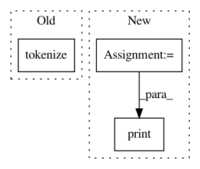

68b5105ae8c0225f426ddfa8928b9bfe9eb76b76,pycorrector/utils/tokenizer.py,,,#,101
Before Change
"小牛曲清去蛋白提取物乙"]
t = Tokenizer()
for i in txt:
txt_seg = t.tokenize(i)
txt_seg_s = t.tokenize(i, "search")
txt_seg_s_n = t.tokenize(i, "search", False)
txt_seg_s_f = t.tokenize(i, "default", False)
print(i)
After Change
if __name__ == "__main__":
text = "这个消息在北京城里不胫儿走"
print(text)
t = Tokenizer()
print("deault", t.tokenize(text, "default"))
print("search", t.tokenize(text, "search"))
print("ngram", t.tokenize(text, "ngram"))
In pattern: SUPERPATTERN
Frequency: 4
Non-data size: 3
Instances
Project Name: shibing624/pycorrector
Commit Name: 68b5105ae8c0225f426ddfa8928b9bfe9eb76b76
Time: 2020-02-27
Author: xuming624@qq.com
File Name: pycorrector/utils/tokenizer.py
Class Name:
Method Name:
Project Name: lingpy/lingpy
Commit Name: 875a33806acea37f602d0ad20fb77cd42432bbb6
Time: 2013-11-08
Author: bambooforest@gmail.com
File Name: scripts/tokenize/tokenize_pad.py
Class Name:
Method Name:
Project Name: Rostlab/nalaf
Commit Name: f558b935a7d4dca8328c1201a26b762029695e8f
Time: 2015-06-17
Author: carsten.uhlig@gmail.com
File Name: demo.py
Class Name:
Method Name:
Project Name: WZBSocialScienceCenter/tmtoolkit
Commit Name: 9aa05168fbd8c188c32974d51ee7057e4b5f2e65
Time: 2019-03-22
Author: markus.konrad@wzb.eu
File Name: examples/preproc_gen_dtm_en.py
Class Name:
Method Name: